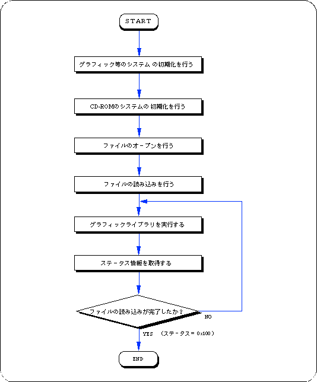
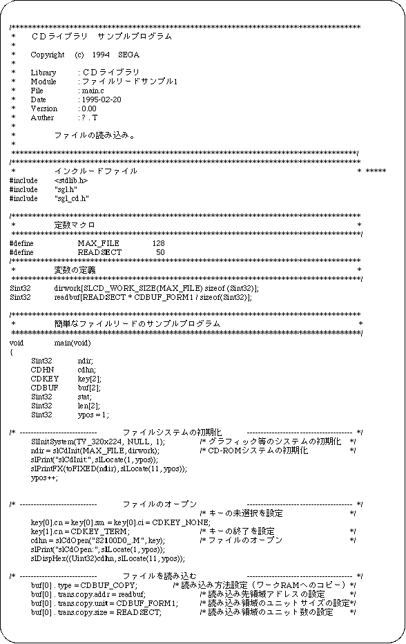
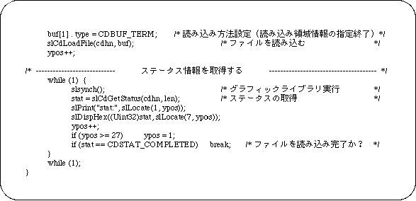

Return to previous page | Return to menu | Go to next page
Reading a file
∙ To load a file, use the functions “slCdOpen”, “slCdLoadFile”, “slCdGetStatus”.
- [CDHN slCdOpen (Sint8 * pathname, CDKEY key []);]
- Specify the file to be read.
“Key” is the type of sector to read. You can specify multiple types of sectors. After specifying all sector types, specify “CDKEY_TERM” as the last channel number.
If the file can be opened correctly, a file handle other than “NULL” is returned as the return value.
However, if the total number of keys in the open file exceeds 24, opening fails.
The opened file is automatically closed when reading is interrupted or completed.
- [Sint32 slCdLoadFile (CDHN cdhn, CDBUF buf []);]
- Specify the reading destination area.
The order of “buf” corresponds to the order of “key” in the function “slCdOpen”.
-
When copying CD-ROM data to work RAM, specify as follows.
buf[ i ]. type = CDBUF_COPY;
buf [i]. trans.copy.addr = read area address;
buf [i]. trans.copy.unit = reading area size unit
(CDBUF_FORM1/CDBUF_FORM2/CDBUF_BYTE);
buf [i]. trans.copy.size = number of read area units;
If - “addr” is NULL and size is 0, it will not be read. For “unit”, match the unit of the size of the reading area to the type of sector of the CD-ROM. This allows you to read the data efficiently. The actual read area should be “unit” x “size” on a 4-byte boundary.
-
When reading while processing data, you can register the function as follows.
buf[ i ]. type = CDBUF_FUNC;
buf [i]. trans.func.func. = function pointer;
buf [i]. trans.func.obj = the value passed to the first parameter of the function;
The - registration function is “Sint32 (* func) (void * obj, Uint32 * addr, Sint32 adinc, Sint32 nsct)”.
The value of “buf [i] .trans.func.obj” is entered in “obj” as it is.
“Addr” is the address from which data is copied.
“Adinc” is a value that indicates the value added to “addr” when 4 bytes are extracted from “addr” in units of 4 bytes.
“Nsct” is the number of sectors that can be read. The return value is the number of sectors actually transferred. After specifying all the transfer areas, specify "CDBUF_TERM" for the last "buf []. Type".
- [Sint32 slCdGetStatus (CDHN cdhn, Sint32 ndata []);]
Call the function “slCdGetStatus” periodically in the
- main loop to monitor the read status.
When the function value becomes “CDSTAT_COMPLETED”, reading is complete.
“Ndata” stores the number of bytes read in the order corresponding to the “key” of the function “slCdOpen”.
Sample program 1 shows an example file reading program.
This sample program is a process for reading files on a CD-ROM, and is an example of using a basic library that reads files from a CD-ROM. The procedure is described along Flow 12-1.
- Performs initialization of graphics and other systems.
- Initializes the CD-ROM system.
- Opens a file.
Since there is key information for classifying data in the input parameter of the function that performs file opening, set this information as necessary.
- The file is read using the file handle and read area information of the return value of the file open function as parameters.
- Executes the graphic library (function “slSynch ()”).
The file specified by reading the file is actually read little by little at this time.
- Get status information and check if the file has been read.
If the file has not been read, it loops until the status is read.
In this loop, call the function “slSynch ()”.
Flow 12-1 Sample program 1 (Load file sample_cd1 / main.c)


List 12-1 Sample program 1 (Load file sample_cd1 / main.c) (continued)

Return to previous page | Return to menu | Go to next page